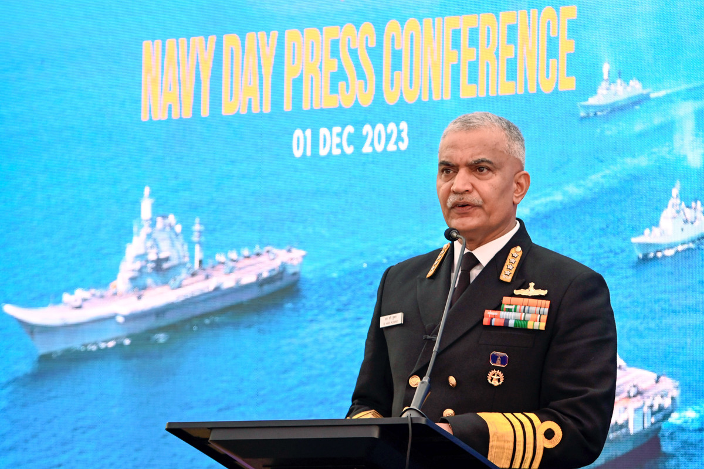

The Indian Navy is the maritime brance of the Indian Armed Forces. Motto: Sham No Varunah. 'May the Lord of water be auspicious to us' (Taken from Taittriya Upanishad).
The President of India Draupadi Murmu is the Supreme Commander of the Indian Navy. The cheif of Naval Staff, a four -star admiral, commands the Navy.
It tasked with protecting India's vast maritime borders, trade routes, and interests in the Indian Ocean, operating as a potent blue-water navy with advanced ships, submarines and aircrafts, led by chief of Naval staff and headquatered in New Delhi, with its core mission of see power projection and safeguarding national security.
As a blue-water navy, it operates significantly in the persian gulf region, the Horn of Africa, the strait of Malacca, and routinely conduct anti-piracy operations other navies in the region. It also conducts routine two to three month long deployments in the South and East China seas as well as in the western Mediterranean sea simultaneously.
